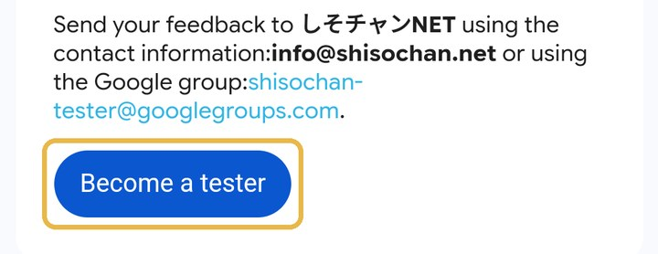
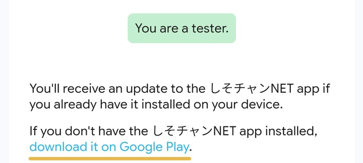

メールを1通送って、届いたメールのボタンを押すだけです。
このテストはAndroid のスマホだけが対象です。
お気持ちだけ、ありがとうございます。
メールの画面が開きます。文はもう入っているので、そのまま右上の 紙飛行機の印 を押して送ります。
info@shisochan.net
1日以内に、しそチャンNETから返信が届きます。中のリンクを押してください。
英語の画面が開きます。下のほうにある、青い Become a tester を押します。

「You are a tester.」と出たら、その下の青い字のdownload it on Google Play を押します。

Play ストアが開いたら、インストール を押します。
14日間、アプリを消さずに置いておいてください。ときどき開いて番組を見ていただけると助かります。
アイコンが見えないときは、画面を下から上へ払い上げると、アプリの一覧にあります。
英語の画面の「Leave the program」は、テストをやめるボタンです。押さないでください。
しそチャンNET ／ 運営：EDIT ROOM（山内 一輝）
お問い合わせ：info@shisochan.net